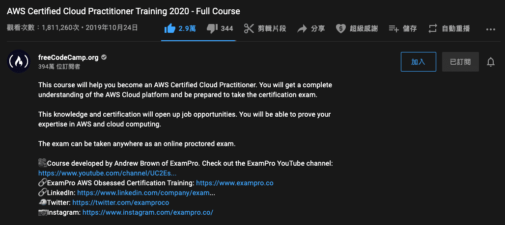

Last year I tried to deploy portfolio with Netlify and Heroku, which helped me focus on frontend side instead of spending time on infrasturecture. It was good to have a basic understanding about AWS after finishing AWS Certified Cloud Practitioner Training 2020 - Full Course by freeCodeCamp.org in July.
Now I would like to get my hand on and deploy a static website on AWS to see if I understand cloud correctly.
